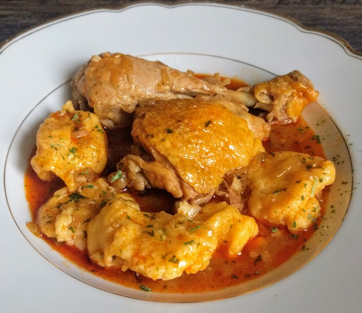

Classic Chicken Paprikasch

Delicous Chicken Paprikasch original Recipe straight out of Heubach
Absolute Delicous.
Ingredients
- Chicken
- Onions
- Garlic
- tomato paste
- Oil
- Paprika powder
- cream
- salt, pepper, spices
- Love
Instructions
- Cut Onions, cook cuted onions and chicken. Add tomate paste garlic, paprika powder and spices
- Add warm water, cook meat until done. Put Chicken aside
- Add cream to the sauce, mix it. Add "Maggi" and Worcestershire sauce. As side dish i recommend pasta
Return to main page